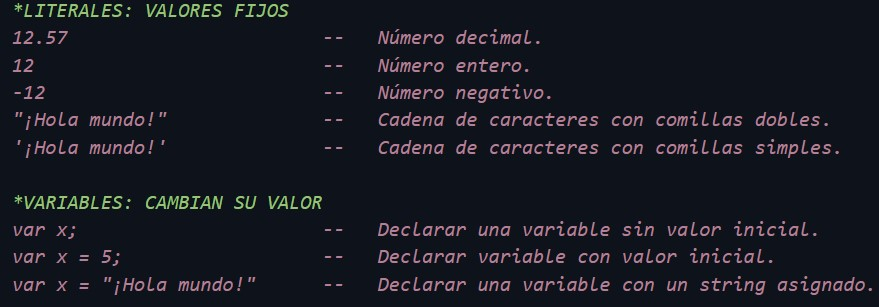
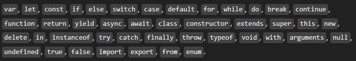
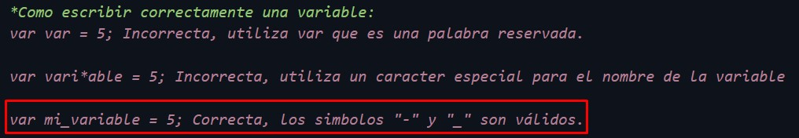
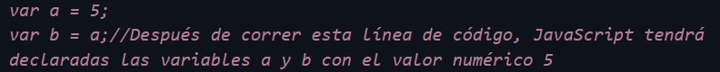
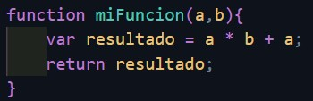
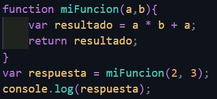
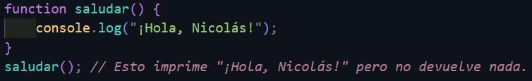

Hola, comenzando módulo de JavaScript hoy 11 de octubre del 2024 espero no morir en el intento 😎.
He concluido con las partes de HTML y CSS, ahora toca aprender un lenguaje de programación: JavaScript. Este lenguaje se maneja en toda la web y se utiliza para muchas cosas, principalmente para manipular nuestro HTML y CSS.
JavaScript es muy distinto a los dos lenguajes vistos en los módulos anteriores. Podemos realizar muchas cosas con él, pero es un poco más dificil de aprender, pues hay que tener claro que este es un lenguaje de programación.
JavaScript cuenta con muchas librerías. Las librerías son básicamente código escrito por alguien más, que cumple con alguna función específica. Una de las mas populares es jQuery, que nos facilita obtener y cambiar elementos de manera dinámica.
En términos simples, un script es un archivo de código ejecutable. Si colocamos una etiqueta script en nuestro HTML, el código será ejecutado por el navegador.
Normalmente, los scripts se agregan al final de la etiqueta body del documento HTML, pero pueden colocarse en cualquier parte del documento. Hay dos maneras de usar la etiqueta script, la primera ligándolo con un archivo con la extensión .js externo y la segunda escribiendo directamente el código JavaScript dentro de la etiqueta script.
Las variables se utilizan para almacenar datos. Se conocen como variables porque su valor puede variar a lo largo de la ejecución del código. En JavaScript, los dos tipos de datos que utilizaremos son números y strings (cadenas de caracteres).
Cualquier programa de computadora está compuesto por instrucciones en código. A estas instrucciones las denominamos sentencias. Las sentencias pueden incluir valores, operadores, expresiones y comentarios. Existen dos tipos de valores: literales y variables y se manejan de la siguiente manera:
Como se puede observar en la imagen para crear una variable tenemos que usar la palabra reservada var. Las palabras reservadas no pueden ser utilizadas fuera de su propósito en el lenguaje.
Así como var, existen otras palabras clave como las siguientes:
Cada línea de código en la sección de "Variables" de la imagen es una declaración. Para legibilidad y orden, las líneas de código en JavaScript que no sean estructuras de control o funciones deben terminar con un punto y coma (";").
La idea de crear variables es tener almacenados datos que podremos utilizar y modificar más adelante. Podemos nombrar variables con cualquier nombre que queramos, con la excepción de palabras clave y a nombres que contengan caracteres especiales a excepción de "_" y "-".
También podemos hacer que diferentes variables interactúen entre sí. Para utilizar el valor actual de una variable, basta con utilizar el nombre que le asignamos. Solo se necesita utilizar var después de declarar la variable.
Las funciones son segmentos de código que realizan una función específica. Las funciones pueden tener variables de entrada para cambiar su comportamiento, y normalmente nos regresan un resultado al finalizar.
Para implementar funciones, utilizamos la palabra reservada function seguida de paréntesis en donde podemos tener variables de entrada(parámetros o argumentos) para que modifiquen el comportamiento de la función. Después se abren llaves {}, las cuales contiene las líneas de código que se ejecutaran cuando se manda a llamar la función. Observemos el siguiente ejemplo:
Para ejecutar una función debemos llamarla y podemos hacer esto cuantas veces queramos. Es por esto que son útiles para reutilizar código. Esto se hace muy fácilmente, escribimos el nombre de la función junto con sus parámetros que, en el caso anterior serian a y b. Si solo escribieramos un parámetro en la llamada, JavaScript nos arrojaría un erro de ejecución debido a que la función que estamos usando requiere 2.
Como podemos ver se crea una variable llamada respuesta y en esa variable se llama la función anteriormente creada y se le asignan los valores integer 2 y 3. Despues de esto hacemos uso de una función de JavaScript llamada console.log que nos muestra el parámetro en la consola.
Si una función no tiene return, su valor será undefined por defecto. Estas funciones se usan cuando quieres que realicen una tarea o acción específica, pero no necesitas que devuelvan ningún valor.
